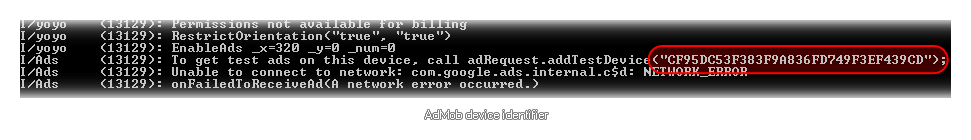

WARNING! As of the 1.3 update to GameMaker: Studio, these functions are no longer applicable to the Android and iOS target platforms. Instead, please see the section on Extensions as these platforms are now supported through Extension Packages.
There are a number of different companies that offer mechanisms
to add advertising to your games, and there are others that permit
you to integrate some form of analytics (so that you can see how
your game is expanding in the given market place). GameMaker:
Studio has a number of functions included as standard to make
adding these services a simple matter.
NOTE: This functionality is limited to the Professional
Version of GameMaker: Studio.
Once you have set up your advertising provider in the Global Game Settings - Advertising Tab, you will need to write them into your game using the following simple functions to control how the adverts are used and displayed:
We also support basic interstitial ads from Admob with the following functions:
Apart from these basic ads, some ad providers (like Supersonic
and AdColony) offer more interactive interstitial ads that can be
used to generate virtual currency for the user. However for
these ads to function correctly you will need to have set up your
own database to record the currencies for each player, which also
means you should create your own login system to get the player id,
or have some mechanism in place to identify each installation of
your game to the database.
When you activate one of these ads it can be an "offerwall"
(essentially a page to promote several different advertising
campaigns) or a video and when the player watches an ad or clicks
on an offer, the ad company calls your callback on the server you
have set up to award the currency to the player. Note that it could
be 15 minutes after the player has watched the movie (or clicked an
offer) or it could be instantaneous so you must have that
backend database set up and active 24 hours a day.
NOTE: To retrieve the currency for your player, you will
need to use the http_get
and http_post_string
functions.
The following functions exist for ads from these companies:
Certain providers provide the possibility to test ads on your device before you actually finalize their use and so GameMaker: Studio includes the option to switch testing on in the Global Game Settings - Advertising Tab. This option will affect your app differently depending on the target platform and the provider selected.
Android
On Android devices when testing is active, all ads will be displayed with a blue background that permits you to see what position and area is being used for the ad as well as see how well the test ads fit the specified ad space. Not all ad providers permit ad testing so below is a brief summary of those that do and how to set them up:
- AdMob - You must first run your game once with AdMob ads enabled (but not testing!), making sure that your key0 advertising key is correct and using the ads_enable function. If you then look at the ADB console output, near the bottom you should see the following line:  The device id number should then be copied into the appropriate space on the Advertising tab of the global Game Settings, and you should now flag the "test Ads" check-box to switch ad testing on. When you run your game again, this will be confirmed to be working by the ADB console output showing the message “Admob using test adverts”.
- Ad Colony - You can see their test videos and offerwalls by configuring the test options through your profile page on their site http://www.adcolony.com/
- Millennial Media - You should set the key0 app id to be "28911" and flag the "Test Ads" check-box to start receiving test ads on your device. This will also raise the number of event logs that are registered to make debugging easier.
iOS
iOS ad testing is limited to only a few companies currently and these are listed below along with instructions on how to set them up:
- AdMob - Unlike on Android devices, Admob for iOS simply needs to be activated on the Advertising tab and have the "Test Ads" check-box ticked and it will then work as it should, sending test ads and ignoring clicks.
- iAds iAds will only use test ads if you are running a signed distribution build and this is regardless of the settings in GameMaker: Studio as it is done automatically by iAds.
- Millennial Media – As with Android, the event log levels are increased to debug levels, but instead of having a universal testing app id, you must register your device id on the mmedia.com site to receive test ads.
HTML5
Currently the support for testing ads on HTML5 has to be configured through the control panel of your developer account with the chosen company, with the "Test Ads" option in the Global Game Settings doing nothing at the moment. It is simply provided to make integrating future advertising partners easier.
PlayHaven is a content provider for iOS and Android that permits you to show interstitial ads with a wide variety of content available - cross promotion of games, paid ads, user data requests and a lot more besides. Accessing all this functionality can be achieved via a very few function calls from within GameMaker: Studio, but to get them to work correctly you will have to have created a PlayHaven account and set up content to be displayed.
Further information on PlayHaven setup and integration can be found on the YoYo Games Knowledge Base.
The following functions can be used in your games to access PlayHaven content:
WARNING! As of the 1.4 update to GameMaker: Studio, these functions are no longer applicable to the Android and iOS target platforms. Instead, please see the section on Extensions as these platforms are now supported through Extension Packages.
Your game can be tracked by different Analytics providers (principally Flurry and Google Analytics) which can be set up in the special Global Game Settings - Analytics Tab. In general, the analytics are autonomous, with each provider tracking the product and making the information available through their own web pages, but there are two extra functions supplied by GameMaker: Studio to permit you to send a text event to the analytics provider which you can then use to track special features from within your game: